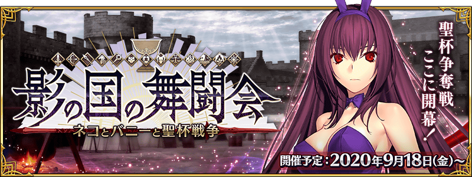
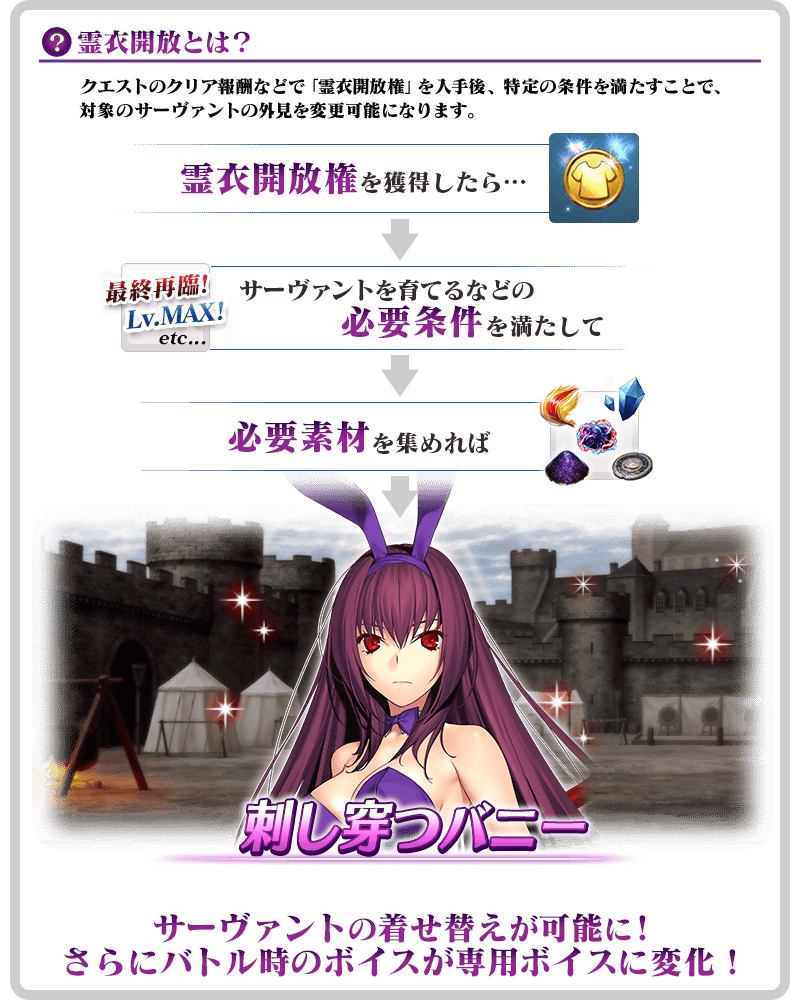

預定舉辦期間限定活動「影之國的舞鬥會 ～貓咪與兔子與聖杯戰爭～」！
在英靈・斯卡哈的領域“影之國”，為了御主所準備的特別訓練開始！
本活動中，推進主線關卡後會開放「聖杯戰線」。
另外自由關卡中收集活動道具的話，除了可交換各種報酬外，也可挑戰抽選來贏得各式各樣的道具！
邊於自由關卡收集活動道具，以贏得聖杯戰線來獲得聖杯做為目標吧！
※本頁面皆為開發中圖片。會有與實際圖片相異的情況。 ※一部份的關卡為後日開放。 ※敬請注意本活動中沒有超高難易度關卡。
◆活動舉辦期間◆
2020年9月18日(五) 17:00～(預定)
◆活動參加條件◆
滿足以下條件的御主才能參加
・通過「特異點F 炎上汙染都市 冬木」


於活動關卡收集「戰士的名牌」，在影之國支付會場交換戰士報酬吧！
戰士報酬的交換是以抽選方式進行す。
在各戰士報酬會放入1個大獎道具。
抽到大獎道具後，點擊「重置戰士報酬」點擊的話，會補充新的大獎道具，切換到下個陣容。
放入大獎道具的陣容有10次份！
獲得大獎道具，清空注目獎品後按下「戰士報酬重置」，補充大獎道具吧！
※戰士報酬中的活動専用道具「魔豬玩偶」，收集的話可交換活動限定指令紋章等豪華道具。 ※第11次之後不會補充大獎道具及「黃金果實」「白銀果實」。 ※交換期間結束後「戰士的名牌」會消失。
◆交換期間◆
2020年9月18日(五) 17:00～(預定)
◆戰士報酬陣容◆
【大獎道具】
| 陣容次數 | 大獎道具 | |||||
|---|---|---|---|---|---|---|
| 第1～5次 |

|
獸之足跡 | ||||
| 第6次 |

|
傳承結晶 | ||||
| 第7次 |

|
英靈結晶・流星之芙芙ALL★4(HP) | ||||
| 第8次 |

|
英靈結晶・日輪之芙芙ALL★4(ATK) | ||||
| 第9次 |
|
英靈結晶・流星之芙芙ALL★4(HP) | ||||
| 第10次 |
|
英靈結晶・日輪之芙芙ALL★4(ATK) | ||||
| 第11次以後 | 無(入手全道具後才能重置戰士報酬) | |||||
【戰士報酬】
| 種類 | 報酬 | |
|---|---|---|
| 活動道具 |

|
魔豬玩偶 |
| 技能強化＆靈基再臨素材 |
鳳凰羽毛 無間齒輪 英雄之證 凶骨 |
|
| 技能強化素材 |
劍之秘石 弓之秘石 槍之秘石 騎之秘石 術之秘石 殺之秘石 狂之秘石 劍之魔石 弓之魔石 槍之魔石 騎之魔石 術之魔石 殺之魔石 狂之魔石 劍之輝石 弓之輝石 槍之輝石 騎之輝石 術之輝石 殺之輝石 狂之輝石 |
|
| 其他道具 |
睿智的猛火ALL★4(SR) 睿智的大火ALL★3(R) 黃金果實 白銀果實 赤銅果實 魔力稜鏡 QP 友情點數 |
|

超值攻略方法・其1
本活動的期間中，所有從者在期間限定活動「影之國的舞鬥會 ～貓咪與兔子與聖杯戰爭～」的自由關卡中，會得到「自身的攻擊威力提升」的加成！
稀有度越低的從者活動加成的效果量越大，活用各式各樣的從者挑戰活動吧 ！
※「自身的攻擊威力提升」的活動加成的效果量因從者的稀有度而異。 ※「自身的攻擊威力提升」的活動加成只限在期間限定活動「影之國的舞鬥會 ～貓咪與兔子與聖杯戰爭～」的自由關卡中發動。不會於聖杯戰線發動，敬請注意。

超值攻略方法・其2
裝備活動限定概念禮裝與期間限定概念禮裝，提升活動道具的掉落獲得數！
裝備可靠活動道具交換入手的活動限定概念禮裝「★5(SSR)掲げるは我心」的話，活動道具「戰士的名牌」的掉落獲得數會提升。
另外，裝備預定在與本活動開始同時舉辦的聖晶石召喚Pick Up的期間限定概念禮裝「★5(SSR)真紅の教槍」「★4(SR)ヘルズキッチン」「★3(R)青き空の学び舎」的話，活動道具「斯卡哈幣〔金〕」「斯卡哈幣〔銀〕」「斯卡哈幣〔銅〕」各自的掉落獲得數會提升。
※請注意各關卡的道具掉落率並非100％。


|
★★★★★SSR
|


|
【活動限定】 |

|
★★★★SR |

|
★★★R |

活動道具可自點擊管理室(ターミナル)畫面右上「活動報酬」鍵所顯示的「活動道具交換」畫面，交換以下的道具。
※關於英靈結晶・流星之芙芙ALL★4(HP)、英靈結晶・日輪之芙芙ALL★4(ATK)，進行在後日開放的本活動主線關卡後才能交換。
◆交換期間◆
2020年9月18日(五) 17:00～(預定)
※活動道具交換期間結束後「魔豬玩偶」「斯卡哈幣〔金〕」「斯卡哈幣〔銀〕」「斯卡哈幣〔銅〕」會消失。
◆能用聖杯之雫交換的道具◆

◆能用魔豬玩偶交換的道具◆
 |
【活動報酬指令紋章】 【技能強化＆靈基再臨素材】 【其他道具】 |
◆能用斯卡哈幣〔金〕交換的道具◆
 |
【活動限定概念禮裝】 【靈衣開放權】 【技能強化＆靈基再臨素材】 【靈基再臨素材】 【其他道具】 |
◆能用斯卡哈幣〔銀〕交換的道具◆
 |
【活動限定概念禮裝】 【技能強化＆靈基再臨素材】 【靈基再臨素材】 【其他道具】 |
◆能用斯卡哈幣〔銅〕交換的道具◆
 |
【活動限定概念禮裝】 【技能強化＆靈基再臨素材】 【其他道具】 |
「★5(SSR)斯卡哈(Lancer)」的靈衣開放權做為期間限定活動「影之國的舞鬥會 ～貓咪與兔子與聖杯戰爭～」的報酬登場！
可在本活動的活動道具交換入手上述靈衣開放權。
另外，想靈衣開放的話，除了靈衣開放權外再加上必須滿足一些開放條件。
◆有關靈衣開放權的注意◆
※「★5(SSR)斯卡哈(Lancer)」的靈衣開放權只限期間限定活動「影之國的舞鬥會 ～貓咪與兔子與聖杯戰爭～」的活動道具交換期間才能入手。
※「★5(SSR)斯卡哈(Lancer)」的靈衣會配合外觀變化一部份語音。
※請注意未持有「★5(SSR)斯卡哈(Lancer)」的情況，可入手靈衣開放權。但無法進行靈衣開放。


「靈衣開放」是自強化畫面進行。
※「靈衣開放」後會自動切換戰鬥角色和圖示。若想回到「靈衣開放」前的狀態和變成其他再臨階段的情況，可自從者詳細畫面變更。 ※進行「靈衣開放」不會讓職階和能力等有所變化。